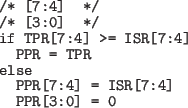

Next: I/O APIC
Up: ハイパーバイザの作り方～ちゃんと理解する仮想化技術～ 第 4 回
Previous: 外部割り込みと割り込みコントローラ
表1に割り込みの処理で利用されるLocal APICの
主なレジスタを示します。
Table 1:
Local APIC の主なレジスタ
| IRR（Interrupt Request Register） |
割り込み要求レジスタ（Read-only） |
未処理の割り込みを管理するレジスタ。
Local APICに外部割り込みが着信する度にベクタ番号に対応するビットがセットされる。 |
| ISR（In-Service Register） |
インサービスレジスタ（Read-only） |
次に発行される割り込みの候補を管理するレジスタ。
EOIレジスタへ書き込まれるとLocal APICによってIRRから最高優先度のビットがコピーされる。 |
| EOI（End Of Interrupt） |
割り込み終了レジスタ（Write-only） |
割り込み処理の終了をLocal APICに通知する為のレジスタ。 |
| TPR（Task Priority Register） |
タスク優先度レジスタ（Read/write） |
外部割り込みに対する実行中タスクの優先度を設定するレジスタ。
TPRに書き込まれた優先度より低い優先度の割り込みはマスクされる。 |
| PPR（Processor Priority Register） |
プロセッサ優先度レジスタ（Read-only） |
実際の割り込み着信時にマスクを行うか否かの判定に使われるレジスタで、TPRとISRに連動して更新される。 |
| Local APIC ID Register |
LAPIC IDレジスタ（Read/Write） |
システム全体でCPUを一意に特定する為のIDであるLAPIC IDを格納しているレジスタ。
LAPIC IDはI/O APICから外部割り込みを転送する時やIPIを送るときなどに使用される。 |
| ICR（Interrupt Command Register） |
割り込みコマンドレジスタ（Read/write） |
IPI（プロセッサ間割り込み）を送信する為のレジスタ。 |
| LDR（Logical Destination Register） |
|
Logical APIC IDを指定, |
| DFR（Destination Format Register） |
|
Logical Destination Modeのモデルを指定（Flat model/Cluster model） |
|
割り込み着信時の Local APIC および CPU
の挙動を簡単にまとめると、次のよう流れになります。
- Local APICが割り込みを受信したら、IRRに対応す
るベクタ番号のビットをセットする。CPUが割り
込みをブロックしている場合はここで処理は終わり
- IRRにセットされた最高優先度のビットをクリア、
同じビットをISRにセット、同じ優先度の割り込
みをCPUへ発行する
- CPUで割り込みハンドラが実行される
- CPUで実行された割り込みハンドラがEOIレジス
タに書き込み、割り込み処理の終了を伝える
- EOIレジスタへの書き込みを受け取ると、ISRに
セットされた最高優先度のビットをクリア。まだ
ISRにビットが残っていたら2から繰り返し
ただし、タスク優先度/プロセッサ優先度という
機能があり、これによって割り込みに対する実行中
タスクの優先度が制御でき、タスクの優先度が受信
した割り込みより高い場合、その割り込みはマスク
されます。
TPR ・ PPRレジスタの値は優先度クラス(4-7bit)・
サブ優先度クラス(0-3bit)の2つの値からなり、優先
度クラスだけが割り込みのマスクに使用されます。
先度サブクラスは後述の「Lowest priority Mode」
で使われますが、割り込みのマスクには使用されま
せん。
PPRの更新はTPRに新しい値が書き込まれたと
きとCPUに割り込みを発行するとき(前述の割り込
み着信時の手順2の段階)に行われます。値は次のよ
うに設定されます。

また、Local APICに割り込みが着信した段階(前
述の割り込み着信時の手順1の段階)で、IRRにセッ
トされた最高優先度のビットとPPRの優先度クラス
(4-7bit)が比較されます。
PPRの優先度クラス(4-7bit)のほうが高かった場合
は割り込みがマスクされます。
Next: I/O APIC
Up: ハイパーバイザの作り方～ちゃんと理解する仮想化技術～ 第 4 回
Previous: 外部割り込みと割り込みコントローラ
Takuya ASADA
2014-04-22